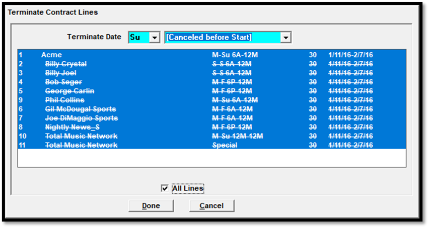
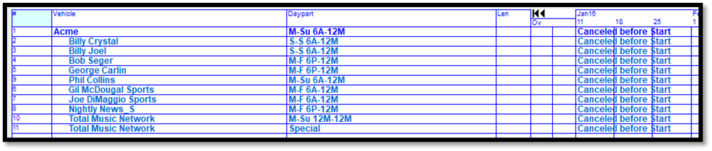

Removing Spots and Lines
This section describes the different ways to cancel a schedule, remove spots, and remove lines from a contract.
Cancel a Schedule Line using the End feature
The End button is used to cancel a schedule line in its entirety before it starts, or to terminate it in the middle, as of a future date.
If schedule lines need to be canceled entirely before they have started, press the End button, select the lines that need to be canceled, set the Terminate Date to Sunday, select “Canceled Before Start” from the date dropdown, and then press Done.

The canceled lines will show “Canceled Before Start”, as shown in the picture below.

If the lines need to be terminated as of a certain date, in the middle of the flight, from the End screen, select the cancelation date from the dropdown and then press Done to remove all spots from the selected lines as of the chosen date.
For example, as shown in the picture below, the lines are being terminated as of 1/24/16, so any spots after that date for the selected lines will be removed from the contract.
Lines can also be terminated as of a non-Sunday date by selecting a different day from the date dropdown.
Remove all Spots from a Schedule Line
To remove all spots from a schedule line, for example because the wrong spot counts were entered and you want to start over, hold the mouse cursor over the 13 week grid for the line that you wish to remove the spots from, and hold the mouse button down until the word “drag” appears. With the mouse button pressed down, drag the cursor to the trash can in the lower right corner, then release the mouse button. This will remove all the spots from the line, while retaining the vehicle, daypart, overrides, and the spot length. Note: on an order, a line cannot be deleted if any spots have already aired. Use the End button instead.
Remove a single Schedule Line from a Proposal or Order
To remove an entire line from a contract, hold the mouse cursor over any part of the line except for the 13 week grid until the word “drag” appears, then drag the line to the trash. Note: on an order, a line cannot be deleted if any spots have already aired. Use the End button.
When dragging a package line to the trash, a prompt will appear that asks whether you wish to remove the package only, which will unpackage the hidden lines, or remove the package and the hidden lines.
Undo
Pressing the Undo button once will remove unsaved changes. When pressing Undo on a proposal that is being entered for the first time and that has never been saved, the first time Undo is pressed, the line area will be cleared. The second time it’s pressed, the header will be cleared.